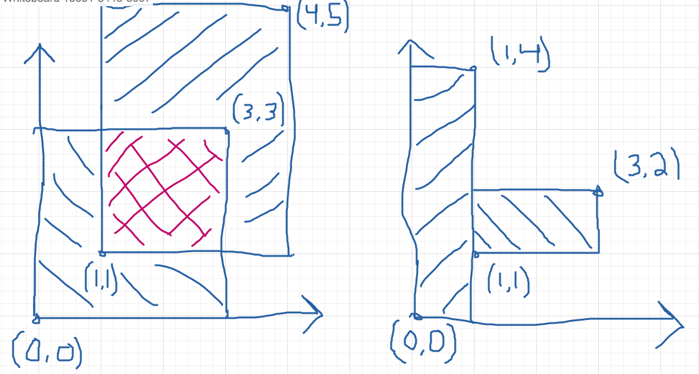

README
preprubychallenges
The Ruby challenge problems from the Markup and Coding course of the Viking Code School Prep Work
https://www.vikingcodeschool.com
1 Ruby Calisthenics
1.1 Power
Write a method power which takes two integers (base and exponent) and returns the base raised to the power of exponent. Do not use Ruby's "**" operator for this!
> power(3,4) => 81 # (3*3*3*3)
def power(base,exponent)
# returns base raised to the power of exponent without the use of ** operator
a = base
b = exponent
c = []
b.times do
c.push a
end
p c.inject(1) {|product, n| product * n}
end
power(3,4)
1.2 Factorial
Write a method factorial which takes a number and returns the product of every number up to the current number multiplied together.
> factorial(5) => 120 # from 1*2*3*4*5
def factorial(n)
# Int => Int
# Takes a number and returns the product of every number up to
# the current number multiplied together
a = []
n.downto(1).each do |i|
a.push i
end
p a.inject(1) {|product, n| product * n}
end
factorial(5)
1.3 Uniques
Write a method uniques which takes an array of items and returns the array without any duplicates. Don't use Ruby's uniq method.
uniques([1,5,"frog",2,1,3,"frog"]) => [1,5,"frog",2,3]
def uniques(array)
# Array of Items => Array of Items
# Takes an array, returns array with duplicate items removed.
# Write without uniq
no_dupes = []
couples = array.combination(2)
groups = array.group_by{|e| e}
groups.each do |g|
no_dupes.push(g[0])
end
p no_dupes
end
uniques([1,5,"frog",2,1,3,"frog"])
1.4 Combinations
Write a method combinations which takes two arrays of strings and returns an array with all of the combinations of the items in them, listing the first items first.
> combinations(["on","in"],["to","rope"]) => ["onto","onrope","into","inrope"]
def combinations(ary1,ary2)
# Ary(Str), Ary(Str) => Ary(Str)
# Takes two arrays of strings, returns an array with all of the combinations
# of the items in them, listing the first item first.
a = ary1
b = ary2
c = []
a.each do |s|
b.each do |x|
c.push "#{s}#{x}"
end
end
p c
end
combinations(["on","in"],["to","rope"])
1.5 Primes
Write a method isprime? which takes in a number and returns true if it is a prime number.
> is_prime?(7) => true > is_prime?(14) => false
def is_prime?(i)
range = (i-1).downto(2)
range.each do |a|
#p i%a == 0
end
p range.any? {|a| i%a == 0}
end
is_prime?(7)
1.6 Rectangle Overlap
Write a method overlap which takes two rectangles defined by the coordinates of their corners, e.g. [[0,0],[3,3]] and [[1,1],[4,6]], and determines whether they overlap. You can assume all coordinates are positive integers.
> overlap( [ [0,0],[3,3] ], [ [1,1],[4,5] ] ) => true > overlap( [ [0,0],[1,4] ], [ [1,1],[3,2] ] ) => false
It doesn't count as overlapping if their edges touch but they do not otherwise overwrite each other. As expressed by a sixth grade student:

def overlap(a,b)
# Array(Coordinates), Array(Coordinates) => Boolean
# a = [[0,0],[3,3]]
ax1 = a[0][0]
ay1 = a[0][1]
ax2 = a[1][0]
ay2 = a[1][1]
awidth = ax2-ax1
aheight = ay2-ay1
aarea = awidth*aheight
# b = [[1,1],[4,5]]
bx1 = b[0][0]
by1 = b[0][1]
bx2 = b[1][0]
by2 = b[1][1]
bwidth = bx2-bx1
bheight = by2-by1
barea = bwidth*bheight
#( [ [0 , 0 ],[3 , 3 ] ], [ [1 , 1 ],[4 , 5 ] ] )
#( [ [ax1, ay1],[ax2, ay2] ], [ [bx1, by1],[bx2, by2] ] )
case a
when bx1 < ax2 && by1 < ay2
true
when bx1 < ax2 && by2 > ay1
true
when bx2 > ax1 && by2 > ay1
true
when ax1 < bx2 && ay2 > by1
true
else
false
end
end
p overlap( [ [0,0],[3,3] ], [ [1,1],[4,5] ] )
p overlap( [ [0,0],[1,4] ], [ [1,1],[3,2] ] )
# further development needed to explore every case
2 A Bigger Challenge: The Counting Game
POSITION! INDEX 0-9! (1..10)
10 friends are sitting in a circle around a table and decide to play a new game. In it, they count up through the numbers from 1 to 100. The first person says "1", the second says "2" and so on… but with a few catches:
- Whenever the number is divisible by 7, they switch directions. So person 6
will say "6", person 7 will say "7", then person 6 again will say "8".
when x%y == 0 # reverse
- Whenever the number is divisible by 11, they skip the next person for the
following number. For instance, if person 3 says "33", person 5 will say
"34" instead (person 4 gets skipped).
friends = [] 10.times do friends.push 0 end
# Produces each number and which person said it # Hash {Person(Int)=>List of Numbers(Array of Integers)}friends = 10 persons = [] friends.times do persons.push [] end count = 0 pos = 0 inc = +1 until count > 99 pos = pos%10 count = count+1 if count%11 == 0 persons[pos].push "#{count} >>>>" pos = pos+(2*inc) elsif count%7 == 0 persons[pos].push "#{count} <<" pos = pos-inc inc = -1 else persons[pos].push "#{count} >>" pos = pos+inc end end persons.each_with_index do |p,index| puts "person #{index+1} says:" p.each do |i| p i end puts "\n" end
| 1 >> | 12 >> | 25 >> | 38 >> | 49 << | 51 >> | 62 >> | 64 >> | 75 >> | 84 << | 86 >> | 97 >> | 99 >>>> |
| 2 >> | 24 >> | 35 << | 37 >> | 48 >> | 50 >> | 61 >> | 74 >> | 83 >> | 85 >> | 96 >> | ||
| 3 >> | 11 >>>> | 23 >> | 34 >> | 36 >> | 47 >> | 60 >> | 73 >> | 82 >> | 95 >> | |||
| 4 >> | 10 >> | 21 << | 46 >> | 59 >> | 70 << | 72 >> | 81 >> | 94 >> | ||||
| 5 >> | 9 >> | 20 >> | 22 >>>> | 33 >>>> | 45 >> | 56 << | 58 >> | 69 >> | 71 >> | 80 >> | 91 << | 93 >> |
| 6 >> | 8 >> | 19 >> | 32 >> | 57 >> | 68 >> | 79 >> | 90 >> | 92 >> | ||||
| 7 << | 18 >> | 31 >> | 42 << | 44 >>>> | 55 >>>> | 67 >> | 78 >> | 89 >> | ||||
| 17 >> | 28 << | 30 >> | 41 >> | 43 >> | 54 >> | |||||||
| 14 << | 16 >> | 27 >> | 29 >> | 40 >> | 53 >> | 66 >>>> | 77 >>>> | 88 >>>> | 100 >> | |||
| 13 >> | 15 >> | 26 >> | 39 >> | 52 >> | 63 << | 65 >> | 76 >> | 87 >> | 98 << |
nil
Your job is to code a program which outputs each number and which person said it. Use it to show that player 1 will say the number "100".
Tips:
- Remember to stick with brute force instead of trying to "figure out" the trick to the problem.
- Name your variables well!
- Ignore the skipping to start out with. Only add it when you're ready.
Advanced Option:
- Make your method take two inputs – the number of players and the number you're counting up to. Then see who says the last number each time!
2.1 The Elevator
You live in a 25 story building with one elevator. The central microcontroller got eaten by rats and the building manager has asked you to code up the elevator's operating procedure until he can get a new one. You figure you'll have to learn to actually code soon but you first want to think things through and pseudocode your design.
2.1.1 Elevator Details
The basic elevator machinery is completely dumb (it doesn't do anything it's not told to do) but is capable of interpreting and executing the commands:
- "open elevator door"
- "close elevator door"
- "go up full speed"
- "go down full speed"
- "slow down"
- "stop"
…and it accepts user input in the form of:
- floor buttons inside the elevator
- door open and close buttons inside the elevator
- up and down call buttons on each floor
…and it has sensors for:
- if a human is in the door closing path
- if it is currently at a floor (instead of in-between floors)
…and it has a few quirky requirements:
- it must "slow down" at least 1 floor before it stops.
- there is a small chance that it actually stops between floors by accident (it's an old elevator)
2.1.2 The Task
Your job is to design a properly working elevator. It should stop on each floor it is physically able to during a given trip to pick up whoever is going the same direction. Additionally, make sure that no one is:
- smashed into the ground
- pushed through the roof
- squished by the doors
- let off in between floors
- stuck going the wrong direction (unless they choose not to exit)
This will be good practice thinking about all the edge cases and scenarios that a user can do.
The point isn't to follow any strict guidelines of syntax but rather to focus on getting the logic of the problem figured out and then organizing it into modules that accomplish the sub-tasks that are required.
Think about:
- Using a loop around everything to keep your pseudocode (and elevator) running.
- Writing everything in one giant mess to start with and then refactoring it to break apart the modules so it feels less cluttered and messy.
2.1.3 Use Modules!
This exercise is large enough that you will need to break your code up into modules. Remember the SOLID lessons – modules should only have one major purpose. For this exercise, you can use other modules by simply calling their name in plain english and writing them out as separate programs down below your main program. They could be groups of procedural instructions like "slow down the elevator if necessary", which runs the "ReachedADestinationFloor?" program.
https://en.wikipedia.org/wiki/SOLID(object-orienteddesign) https://www.vikingcodeschool.com/software-engineering-basics/solid-design-principles
PROGRAM Elevator:
# other code
slow down the elevator if necessary
# other code
END
# other code
PROGRAM SlowDownIfNecessary
IF we are traveling up at full speed
IF we are only 1 floor away from the lowest destination floor
slow down
END
ELSE IF we are traveling down at full speed
IF we are only 1 floor away from the highest destination floor
slow down
END
END
END
2.2 NB: Software Engineering
https://www.vikingcodeschool.com/software-engineering-basics
- "logic" way through problems
- pseudocoding ("whiteboarding")
- software design
- solve problem first THEN code the solution
- break Problem apart into individual sub-processes called "Modules"
- Modules Interface
- keep modules as independent as practically possible (aim for low "Coupling")
- make sure modules are all working towards the same goal (are highly "Cohesive")
- try to keep modules insulated from how other modules actually do their job (keep them highly "Encapsulated")
- Modules Interface
- SOLID principles
- software design
- modular design and engineering best practices
- 4-step engineering problem solving approach
- Understand the problem
- Plan a solution
- Carry out that plan
- Examine your results for accuracy
- Agile development
- project management technique / development philosophy
- teams commonly work in short (1-2 week) sprints
- XP and SCRUM, Agile techniques
- short cycle times
- frequent client/user interaction
- keeps project focused on relevant tasks
- XP
- pair programming
- pairing developers together at workstations
- pair programming
- keep software user-driven
- TDD
- pseudocoding ("whiteboarding")
2.2.1 Learning Modularity
- The 3 Characteristics of Good Modules
Essentially, there are just three important guidelines for how modules should operate and interact. These high level principles essentially guide the theory behind modularity – it's good to break things into pieces, those pieces shouldn't rely on each other for much, each piece should do its own thing, and pieces should talk to each other using pre-determined interfaces.
Modules should have:
- Low Coupling – they should be minimally dependent on each other and
communicate using specified interfaces
- forcing modules to communicate with each other only by using specified interfaces
- High Cohesion – they should be focused completely on achieving the overall goal
- High Encapsulation – they shouldn't reveal their implementation details to anyone else (and shouldn't need to)
- Low Coupling – they should be minimally dependent on each other and
communicate using specified interfaces
- 5 key engineering principles. SOLID
- Single Responsibility Principle (SRP)
modules should only exist to serve one purpose and may only change if that purpose is modified
- Open/Closed Principle (OCP)
modules should be open for extension but closed to modification
- Liskov Substitution Principle (DIP)
modules that inherit from a parent should not alter any of that parent's functionality
- Interface Segregation Principle (ISP)
each different user of a module should get to access it via a specialized interface that only requires them to supply the minimal amount of information
- Dependency Inversion Principle (DIP)
higher level modules should dictate the implementation details of lower level modules, not the other way around
- Single Responsibility Principle (SRP)